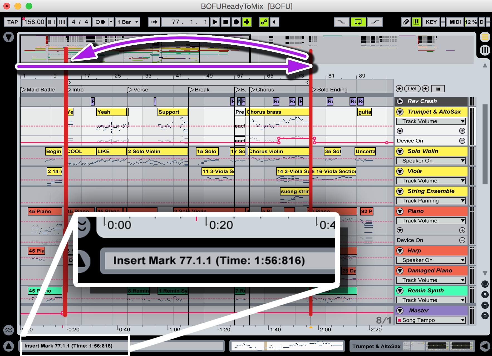
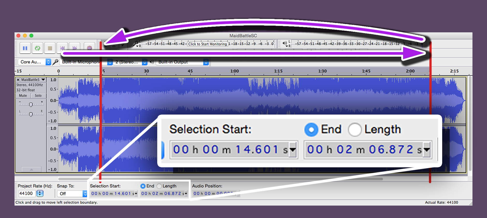
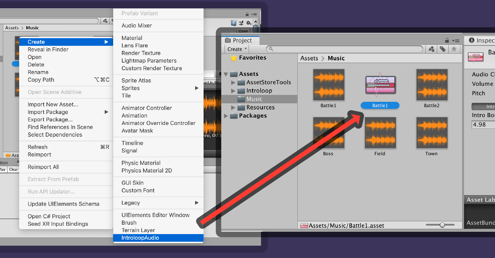
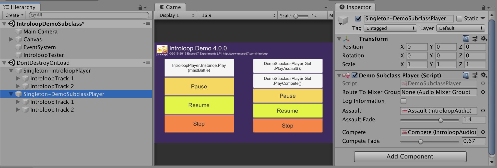
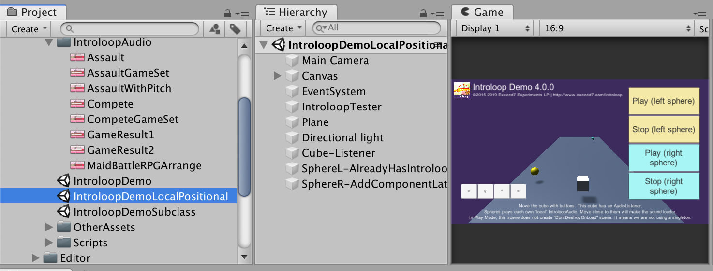

Getting Started
Here's how to play your first audio with Introloop.
Installation
First you should license this plugin from Unity's Asset Store. After importing, a folder Assets/Introloop will appear in your project's Root, along with Assets/Resources/Introloop/IntroloopPlayer.prefab in your Resources folder.
Prefabs in Assets/Resources/Introloop are called template prefab. It is required to be in Resources folder with this exact name and location. Introloop can start in singleton mode or local mode, in singleton mode it will base its settings from this prefab. (More on this later)
If your game is using Assembly Definition Files (asmdef), link your game's to Introloop's E7.Introloop assembly to gain access to using E7.Introloop; namespace in your code.
Finding boundaries
After you got an audio that you would like to play we will need 2 time points. The first point is called "Intro Boundary" which is the point that separates an intro from the rest of the song. The 2nd point is "Looping Boundary". When the playhead arrives at this point it will go back to Intro Boundary. Ideally the audio bits after both boundary should sound exactly the same, so you have to be precise here.
If possible you should ask these point directly from your composer, since in the Digital Audio Workstation (DAW) there is a beat grid to snap to and it is a sure fire way to get the exact time!
What if I already have the music but cannot contact my composer?
In this situation you can use a free program like Audacity to find the Intro and Looping Boundary by yourself. Timing might be difficult since there is no snap, but zooming closely to the waveform you should see a meaningful transient that you can match. There is an article from the Audacity team of how to make a looping audio. If you follow the guide and successfully cut a looping part, you have already got 2 time points required for Introloop which is the begining and end point that you cut.
So the music data after Looping Boundary is never heard?
Correct, but you should leave some tail after that boundary anyway (like 1 second) just in case an unexpected lag happen and for small compression artifact. Tell your composer to render a bit more after the planned Looping Boundary.
Making an IntroloopAudio asset file from an imported AudioClip
Next please right click an audio file in Unity then Create > IntroloopAudio. A new asset file should appear alongside your original audio file.
This is called an IntroloopAudio file. You will use this file instead of original audio to issue Play. (But don't delete the original audio file from the project!) There is a custom inspector if you click it.
The Audio Clip field has already been connected for you to the file you right clicked. Next, you should enter the Intro Boundary and Looping Boundary time value you got earlier in seconds.
You can also set a default volume here which is convenience for balancing music level, since normally Unity cannot store playback volume information in the AudioClip directly. Starting from v2.0 you can also set a constant pitch modification.

There are 3 playback modes to choose from which you can set per audio. The Introloop mode is the point of this plugin. Loop and Non looping is for playing like Unity normally did with Loop checked and unchecked in AudioSource respectively. For these 2 modes the boundaries is ignored, but you will still get Introloop's crossfade, auto audio unloading, etc. benefits. Also, Loop mode is not using a regular AudioSource's loop, but using the same precise scheduling methods used to implement the Introloop mode. You could try this if regular looping wasn't accurate enough for you.
Playing an IntroloopAudio with the IntroloopPlayer
First of all include the namespace using E7.Introloop; to your file. Make sure you have already link up the Assembly Definition Files (asmdef), to Introloop's E7.Introloop.
In any of you component script, declare public IntroloopAudio myIntroloopAudio; in your script to expose the variable to your inspector. Then drag the IntroloopAudio asset file to the slot. Or you can place the file in Resources folder and dynamically load it via Resources.Load(string). (not recommended) Either way you will get an instance of type IntroloopAudio in your script.
Next we need an IntroloopPlayer to play this IntroloopAudio. You have mainly 3 ways of obtaining the player.
1. Singleton IntroloopPlayer
The easiest way which uses singleton pattern. By calling a static property IntroloopPlayer.Instance for the first time, a set of game objects (ultimately consists of 4 AudioSource) will appear on the hierarchy under the scene DontDestroyOnLoad. It will persists indefinitely and does not stop playing a song even if you load a next scene with LoadSceneMode.Single.
This is where a template prefab comes into play. If you don't have any it will create the player game objects just fine, but with template prefab you could set some properties beforehand, like mixer routing which you need to connect it to a mixer asset file of your game and is difficult to do via scripting. In the image above mixer is not connected, but if you had set one in the template prefab folder it will appears with that mixer.
In summary, with just IntroloopPlayer.Instance.Play(myIntroloopAudio); you should already be able to hear seamlessly looping audio with intro! The image below demonstrate a simple class that can choose to play one of many IntroloopAudio that I have.
2. Subclassed singleton IntroloopPlayer<T> (Advanced)
With IntroloopPlayer.Instance.Play, it refers to the same "Instance" throughout your game. Meaning that you cannot have 2 concurrent Introloop player playing+looping at the same time.
However from version 3.0 onwards you can create a subclass like this : public class MySubclass : IntroloopPlayer<MySubclass> { ... (Please put itself in the generic just like that) Then you will gain a new singleton static accessor : .Get
With MySubclass.Get, it works like IntroloopPlayer.Instance but will spawns a different set of player! This means you can now have many Introloop playing at the same time. It is useful for dividing the players into several parts. Like BGMPlayer, AmbientPlayer, etc. You could have a looping BGM with intro, playing along with seamlessly looping wind sound.
Moreover, you can then define your own methods on your subclass to be more suitable for your game. Like FieldBGMPlayer.Get.PlayDesertTheme() instead of IntroloopPlayer.Instance.Play(desertTheme);. And the full potential lies in that the template prefab file is not the same as IntroloopPlayer ones. The name was hardcoded as the same as your class name. If your class name is FieldBGMPlayer then you must have FieldBGMPlayer.prefab in the same location as IntroloopPlayer.prefab in Resources folder. (Can be redefined in IntroloopSettings.cs constant fields.)
For example, if your subclass name is DemoSubclassPlayer here is how you might set it up. Note the template prefab name which must be the same as your class's name. Look in the inspector, we can now even declare and connect all the IntroloopAudio we wish to play directly in the player! (Not as a reference on any scene.)
See the IntroloopDemoSubclass demo scene if you have any trouble setting this up.
3. Local, positional IntroloopPlayer(Advanced)
From version 3.0 you can now have non-static IntroloopPlayer anywhere in the scene as many instances as you like. If you do, you need to keep and access it with a normal IntroloopPlayer variable. (That is not a result of IntroloopPlayer.Instance call, that is a global, singleton ones.)
How to get one is easy, just attach IntroloopPlayer component to one of your game object in the scene. All of the required AudioSource will be spawned directly as a child of this game object after an Awake of the component. Or an another way, you could gameObject.AddComponent<IntroloopPlayer>() anytime. The next frame all of the required audio sources will be ready.
The local Introloop does not automatically get DontDestroyOnLoad like IntroloopPlayer.Instance or Subclass.Get ones, thus they will stop playing if you change scene with LoadSceneMode.Single, etc. Also, it will be positional by default. (Spatial blend is 1, or full 3D.)
The point of having a local Introloop is that you would like it to be positional. Imagine you have bushes with an individual seamlessly looping leaf sound somehow with an intro. And you also want these to get louder as the player approaches it. You could make local Introloop on the bush. Note that each one will uses 4 AudioSource.
This might be confusing, so see the IntroloopDemoLocalPositional demo scene if you have any trouble setting this up.
How to route audio to your own AudioMixerGroup
It is difficult to get the audio mixer asset file at runtime to connect, so you should utilize the template prefab in Assets/Resources/Introloop/IntroloopPlayer.prefab. The IntroloopSetting class inside IntroloopPlayer component has a slot for AudioMixerGroup. The first time IntroloopPlayer.Instance was called, the settings will also be copied too.
On that template prefab you can find other settings such as default fade length, used when calling method with the word Fade without fadeLengthSeconds argument and even an option to turn on logging. When using a subclassing way, the name of prefab needs to match the class name.
You can also set a mixer routing at runtime with myIntroloopPlayer.SetMixerGroup which propagates the mixer group to all AudioSource it uses. If you have any needs to do other things to all 4 AudioSource of IntroloopPlayer at once, you can foreach on myIntroloopPlayer.InternalAudioSources property.
Pay attention to your AudioClip's import settings
Your AudioClip made up the IntroloopAudio asset, and the play is fully respecting every import settings you made there.
Preload Audio Data is not recommended!
I recommend you to uncheck Preload Audio Data for all audio you planned to use with Introloop. Since if checked, merely having reference to IntroloopAudio in any GameObject's inspector slot will cause the audio to be loaded into memory at scene start even if you are not going to play it yet.
This is Unity's default, Unity scans all references in the scene and load all of them at start. Be it texture, ScriptableObject, etc. But luckily only for audio we have this checkbox unchecking to prevent it. For other things, we need to deliberately place them in Resource folder or use the new Addressable Asset System, don't have them attached to any inspector slot in the scene, and finally load them via string path of Resources.Load or Addressables.Load. All these inconveniences just to prevent the auto load. (You can also read my research regarding texture memory loading.)
And also Introloop has some optimized loading logic. It loads only when you call Play. It unloads immediately on Stop, after a crossfade has ended if any. (Unity's default does not unload an audio on stopping.) So if you check Preload Audio Data this optimization loading logic will be useless. Even if you want an audio preloaded to have the fastest start on Play, I have also provided .Prepare() method that can force the load anytime without playing.
Load In Background
You can use either. With Load In Background, a Play call will be non-blocking and Introloop will properly wait for an audio to fully load before playing at several frames later. (This wait is with a coroutine running on the IntroloopPlayer) Without Load In Background, a Play will be a blocking call. An audio will be surely played in the same frame but the game might lag a bit depending on your audio size and compression settings. An advanced method .Prepare() can force a load so that the next Play is instant.
Compression and Quality
As advertised we don't need to physically cut an audio file with Introloop, we could use any compression format we want without fearing the dreaded compression artifacts/offset samples at the edge of waveform ruining the loop. Smash the quality down as much as you like to save space, it will still loop seamlessly. Also you could also resample it down to lower rate to save even more space.
Load Type
Decompressed load and compressed in memory works flawlessly. But there is a slight problem with Streaming. In this mode, Unity's API does not allow a full load. A load command just load a very small chunk (the "buffer size" just enought to start streaming). The result is that Play starts eagerly while the rest is being loaded at the same time. This might cause the first loop to be mistimed and not so seamless if called when your game is busy. Unloading also does not work, but it is not required anyways since with Streaming you are already using a very small amount of memory throughout the play.
If you really needs to use Streaming mode with Introloop, at least wait a frame or two after Awake, Start so that the game is less busy. The reason is that in other compression mode the loading code can wait properly and does not matter if the game is busy or not. When this problem happen you will hear that at the first loop it "skips" to the loop point just a bit too early before the song actually get there. This is because the schedule starts on-time but the song actually starts a bit later, the schedule is running ahead of the song.
Update : From version 4.0.0 onwards, there is a slight delay offsetted to the scheduling on each play. This helps stabilize Streaming load type greatly. The mentioned problem could still occur if the game lags more than this added offset, which is just a bit more than 1 frame of 60 FPS. You can change this in the source IntroloopTrack.cs > float smallPrepareTime if you wish.